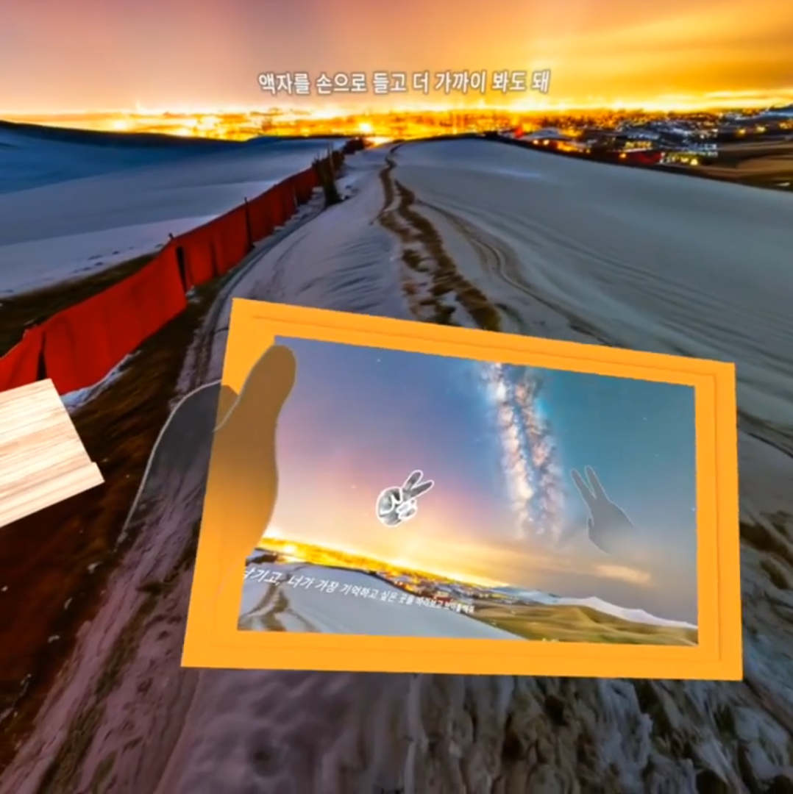

너스탤지아 XR 경험과 AI 파이프라인
관객 음성을 입력으로 받아 대화, 시각 요소 생성, XR 공간 연출, 운영 대시보드까지 하나의 흐름으로 연결한 프로젝트입니다. Whisper, GPT, TTS, Skybox, Meshy를 묶어 실제 체험 가능한 흐름으로 만들었습니다.
문제와 적용 방식
이 프로젝트의 핵심은 관객의 음성 입력을 XR 경험 안에서 끊기지 않게 연결하는 일이었습니다.
AI는 전면 연출용으로만 쓰지 않고, 음성 인식, 대화 처리, 음성 응답, 360도 배경 생성, 3D 오브젝트 생성처럼 각 단계에 나눠 적용했습니다.
중요했던 것은 생성 결과 자체보다, 비동기 처리와 사용자별 저장 구조, 운영 관측까지 포함해 실제 전시 가능한 흐름으로 묶는 일이었습니다.


왜 AI가 필요했는가
입력 해석
관객 음성을 실시간 흐름 안에서 텍스트와 의미 단위로 나눌 필요가 있었습니다.
생성 연결
대화, 배경, 오브젝트 생성이 따로 놀지 않고 하나의 경험으로 이어져야 했습니다.
운영 관측
전시 환경에서는 결과뿐 아니라 사용자별 기록과 운영 확인 흐름도 필요했습니다.
문제와 대응
문제 1. 여러 AI 서비스를 한 번에 쓰면 응답 지연과 비동기 처리 문제가 생깁니다.
대응. Webhook 기반 비동기 처리와 사용자별 저장 구조로 생성 흐름을 분리했습니다.
문제 2. 전시 환경에서는 체험 중 상태를 운영자가 확인할 수 있어야 합니다.
대응. React 대시보드로 사용자별 기록과 생성 결과를 확인할 수 있게 구성했습니다.
문제 3. 생성 결과가 경험 안에서 어색하게 분리되면 전체 체험이 깨집니다.
대응. 대화, 환경, 오브젝트 생성 결과를 하나의 흐름으로 이어서 XR 경험 안에서 자연스럽게 이어지도록 만들었습니다.


결과
BIFAN XR Beyond Reality 섹션에 공식 선정됐습니다.
관객 체험과 운영 확인이 가능한 XR 흐름을 실제 프로젝트로 만들었습니다.
이 경험은 이후 AI를 제품 흐름 안에 배치하는 기준이 되는 사례가 됐습니다.
BIFAN 선정
XR Beyond Reality
AI 파이프라인 연결
Whisper · GPT · TTS · Skybox · Meshy
운영 구조 정리
Webhook · 사용자별 저장 · Dashboard